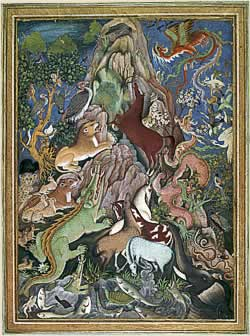

Painting a Mughal Manuscript Miniature The artists of the Mughal court produced luxuriously illustrated stories, manuscripts and albums. The workshops they worked in were called kitab-khana which means 'house of books'. The techniques they used were painstakingly detailed, and the materials very expensive - but the results were well worth their costly efforts. Here an artist (Anita Chowdry) reproduces a corner of a miniature painting using the techniques laboriously followed by the Mughal court artists. | |
| next... | |